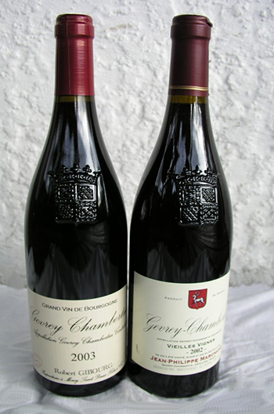
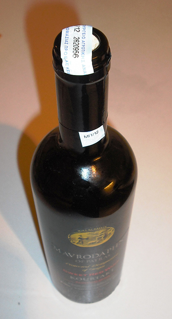
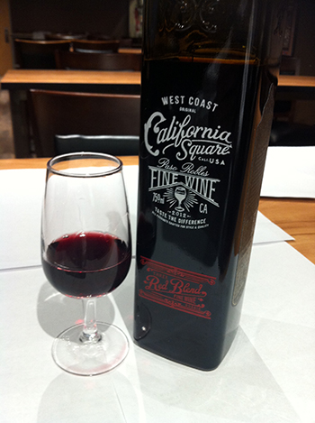

Welcome to The Wino App!! This is a place for you to let us do the pairing for you! Tell us what you are going to have for dinner and we will find you the perfect bottle to compliment your meal. Not only will we suggest a great bottle for you but we will also help you find it. Keep your Geoloc turned on in your device and we can check the inventory levels at he stores surrounding your area and we can tell you where to buy it.
The Wino App is going to revolutionize the way that we interact with the consumer- Jeff Warner (A professional Wino)
We have a vast collection of wine in our database. So much so that I dont think it's posible for the average consume to have drank it all in one life time but if you are up for the challenge so are we!!
Some of our Wines
AZIENDA AGRICOLA BASTIANICH & LA MOZZA
In 2001, Lidia Bastianich, Joe Bastianich and Mario Batali joined forces to create La Mozza, a 100 acre property located in the Maremma region of Tuscany (Magliano in Toscana, Grosseto) near Scansano southwest of Montalcino, 10 miles from the Tyrrhenian sea. Unlike other regions of Tuscany which are bound to regulations which define and restrict grapes and wine styles, Maremma allows more freedom of expression in order to achieve our goal of producing unique wines by incorporating mediterranean varietals such as Alicante, Petit Verdot, and Syrah. Through the research of our winemaker Maurizio Castelli, who also produces the Bastianich wines in Friuli, we are convinced that La Mozza is the ideal location. info by Lidia Bastianich, Joe Bastianich and Mario Batali image supplied from click here
ITALIAN SPARKLING
Rosecco is a white wine grape variety used to make sparkling wine. It also happens to be a region located in Veneto in northwest Italy. Many call the Prosecco grape “Glera.” Most Prosecco wines are meant to be enjoyed young and fresh, so try to buy the newest vintage. You’ll find the aromatics to be flowery and peachy with nuances of vanilla bean, even though it will taste dry (aka not sweet). Still, Proseccos do taste slightly sweeter than traditional Champagne. If you see Prosecco rosé, know that the pink color comes from the addition of a touch of Pinot Nero (Pinot Noir); giving them yellow peach and strawberry flavors. info by Graziano Merotto image supplied from click here
BIANCO
Layers of fruit supported by a lovely vein of minerality which gives the wine notable continuity on the palate as well as a long, clean finish... Clearly has the stuffing to develop further complexity in bottle. info by Bastianich image supplied from click here
{kind=link}
{kind=link}
{kind=link}
{kind=link}
{kind=link}
{kind=link}